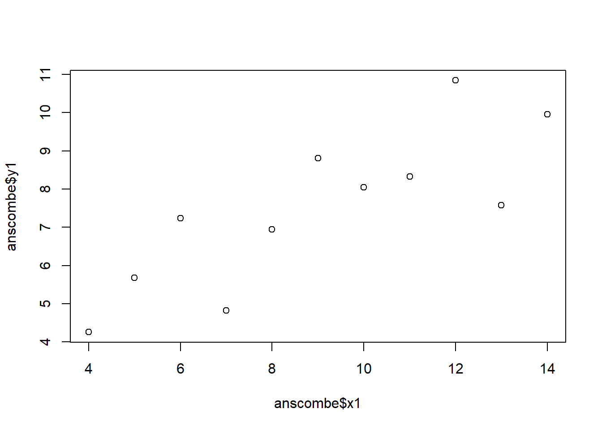

#1 Choose one of the six charts and explain how it is configured by adding documentation to the codes.
### Paul Murrell's R examples (selected)## I choose the 1st plot (Scatter plot)# Data setup: two response/dependent variables (y1, y2) measured at different x points/independent varaiblesx <-c(0.5, 2, 4, 8, 12, 16)y1 <-c(1, 1.3, 1.9, 3.4, 3.9, 4.8)y2 <-c(4, .8, .5, .45, .4, .3)# Setting graphical parameters:# las=1 (horizontal axis labels), mar (margins), cex (text size)par(las=1, mar=c(4, 4, 2, 4), cex=.7) ## Initialize an empty plotting windowplot.new()
plot.window(range(x), c(0, 6))# Add lines connecting points for both datasetslines(x, y1)
lines(x, y2)
# Add data points: pch=16 (solid circles), cex=2 (twice normal size)points(x, y1, pch=16, cex=2) # Try different cex value?
points(x, y2, pch=21, bg="white", cex=2) # # pch=21 = open circles, white fill
# Adjust axis colors to graypar(col="gray50", fg="gray50", col.axis="gray50")# Add custom axes on bottom (1), left (2), and right (4)axis(1, at=seq(0, 16, 4)) # What is the first number standing for?
axis(2, at=seq(0, 6, 2))
axis(4, at=seq(0, 6, 2))
# Add box with "u" shape box(bty="u")
# Add axis labels in the marginsmtext("Travel Time (s)", side=1, line=2, cex=0.8)
mtext("Responses per Travel", side=2, line=2, las=0, cex=0.8)
mtext("Responses per Second", side=4, line=2, las=0, cex=0.8)
# Add text annotation inside the plottext(4, 5, "Bird 131")
All four regression models in Anscombe’s Quartet (lm1, lm2, lm3, lm4) have virtually identical summary statistics, such as same means, variances, regression coefficients, and R² (around 0.67). However, when plotted, each dataset shows a very different pattern:
Set 1: A normal linear relationship: the regression line fits well.
Set 2: A curved (nonlinear) relationship: violates linear assumptions.
Set 3: The presence of one outlier strongly influences the fit.
Set 4: A single leverage point determines the regression slope entirely.
From this example, its evident that only quantitative analysis or numerical summaries alone can be really misleading, the researcher can end up in wrong conclusion or findings. Visual inspection is essential to detect nonlinearity in the data and account for outliers is very important to understand the underlying pattern or robust analysis. So, it is recommended to combine the quantitative or statistucal analysis with visual inspection not only for analyzing the data pattern but also for choosing the appropriate model.
#2(b) Compare Different Ways to Create the Plots
The simple version plots each dataset individually using: plot(anscombe\(x1, anscombe\)y1) abline(coefficients(lm1))
This approach produces plain black scatterplots with default settings. But, we can improves clarity and comparison in many ways such as:
-Using colors like (col=“red”, bg=“orange”) and custom symbols (pch=21).
-Adding blue/other regression lines (col=“blue”).
-Arranging all four plots in a 2×2 or 3x2 grid i.e par(mfrow=c(2,2)).
-Keeping axes consistent (xlim, ylim) for fair comparison.
As such, visual enhancements (color, layout, point shape) make patterns and outliers more evident, reinforcing the principle that data visualization reveals some insightful truths that statistics can hide.
## Data Visualization## Objective: Identify data or model problems using visualization## Anscombe (1973) Quartletdata(anscombe) # Load Anscombe's dataView(anscombe) # View the datasummary(anscombe)
x1 x2 x3 x4 y1
Min. : 4.0 Min. : 4.0 Min. : 4.0 Min. : 8 Min. : 4.260
1st Qu.: 6.5 1st Qu.: 6.5 1st Qu.: 6.5 1st Qu.: 8 1st Qu.: 6.315
Median : 9.0 Median : 9.0 Median : 9.0 Median : 8 Median : 7.580
Mean : 9.0 Mean : 9.0 Mean : 9.0 Mean : 9 Mean : 7.501
3rd Qu.:11.5 3rd Qu.:11.5 3rd Qu.:11.5 3rd Qu.: 8 3rd Qu.: 8.570
Max. :14.0 Max. :14.0 Max. :14.0 Max. :19 Max. :10.840
y2 y3 y4
Min. :3.100 Min. : 5.39 Min. : 5.250
1st Qu.:6.695 1st Qu.: 6.25 1st Qu.: 6.170
Median :8.140 Median : 7.11 Median : 7.040
Mean :7.501 Mean : 7.50 Mean : 7.501
3rd Qu.:8.950 3rd Qu.: 7.98 3rd Qu.: 8.190
Max. :9.260 Max. :12.74 Max. :12.500
## Simple versionplot(anscombe$x1,anscombe$y1)

summary(anscombe)
x1 x2 x3 x4 y1
Min. : 4.0 Min. : 4.0 Min. : 4.0 Min. : 8 Min. : 4.260
1st Qu.: 6.5 1st Qu.: 6.5 1st Qu.: 6.5 1st Qu.: 8 1st Qu.: 6.315
Median : 9.0 Median : 9.0 Median : 9.0 Median : 8 Median : 7.580
Mean : 9.0 Mean : 9.0 Mean : 9.0 Mean : 9 Mean : 7.501
3rd Qu.:11.5 3rd Qu.:11.5 3rd Qu.:11.5 3rd Qu.: 8 3rd Qu.: 8.570
Max. :14.0 Max. :14.0 Max. :14.0 Max. :19 Max. :10.840
y2 y3 y4
Min. :3.100 Min. : 5.39 Min. : 5.250
1st Qu.:6.695 1st Qu.: 6.25 1st Qu.: 6.170
Median :8.140 Median : 7.11 Median : 7.040
Mean :7.501 Mean : 7.50 Mean : 7.501
3rd Qu.:8.950 3rd Qu.: 7.98 3rd Qu.: 8.190
Max. :9.260 Max. :12.74 Max. :12.500
# Create four model objectslm1 <-lm(y1 ~ x1, data=anscombe)summary(lm1)
Call:
lm(formula = y1 ~ x1, data = anscombe)
Residuals:
Min 1Q Median 3Q Max
-1.92127 -0.45577 -0.04136 0.70941 1.83882
Coefficients:
Estimate Std. Error t value Pr(>|t|)
(Intercept) 3.0001 1.1247 2.667 0.02573 *
x1 0.5001 0.1179 4.241 0.00217 **
---
Signif. codes: 0 '***' 0.001 '**' 0.01 '*' 0.05 '.' 0.1 ' ' 1
Residual standard error: 1.237 on 9 degrees of freedom
Multiple R-squared: 0.6665, Adjusted R-squared: 0.6295
F-statistic: 17.99 on 1 and 9 DF, p-value: 0.00217
lm2 <-lm(y2 ~ x2, data=anscombe)summary(lm2)
Call:
lm(formula = y2 ~ x2, data = anscombe)
Residuals:
Min 1Q Median 3Q Max
-1.9009 -0.7609 0.1291 0.9491 1.2691
Coefficients:
Estimate Std. Error t value Pr(>|t|)
(Intercept) 3.001 1.125 2.667 0.02576 *
x2 0.500 0.118 4.239 0.00218 **
---
Signif. codes: 0 '***' 0.001 '**' 0.01 '*' 0.05 '.' 0.1 ' ' 1
Residual standard error: 1.237 on 9 degrees of freedom
Multiple R-squared: 0.6662, Adjusted R-squared: 0.6292
F-statistic: 17.97 on 1 and 9 DF, p-value: 0.002179
lm3 <-lm(y3 ~ x3, data=anscombe)summary(lm3)
Call:
lm(formula = y3 ~ x3, data = anscombe)
Residuals:
Min 1Q Median 3Q Max
-1.1586 -0.6146 -0.2303 0.1540 3.2411
Coefficients:
Estimate Std. Error t value Pr(>|t|)
(Intercept) 3.0025 1.1245 2.670 0.02562 *
x3 0.4997 0.1179 4.239 0.00218 **
---
Signif. codes: 0 '***' 0.001 '**' 0.01 '*' 0.05 '.' 0.1 ' ' 1
Residual standard error: 1.236 on 9 degrees of freedom
Multiple R-squared: 0.6663, Adjusted R-squared: 0.6292
F-statistic: 17.97 on 1 and 9 DF, p-value: 0.002176
lm4 <-lm(y4 ~ x4, data=anscombe)summary(lm4)
Call:
lm(formula = y4 ~ x4, data = anscombe)
Residuals:
Min 1Q Median 3Q Max
-1.751 -0.831 0.000 0.809 1.839
Coefficients:
Estimate Std. Error t value Pr(>|t|)
(Intercept) 3.0017 1.1239 2.671 0.02559 *
x4 0.4999 0.1178 4.243 0.00216 **
---
Signif. codes: 0 '***' 0.001 '**' 0.01 '*' 0.05 '.' 0.1 ' ' 1
Residual standard error: 1.236 on 9 degrees of freedom
Multiple R-squared: 0.6667, Adjusted R-squared: 0.6297
F-statistic: 18 on 1 and 9 DF, p-value: 0.002165
# Use serif font and adjust layoutpar(mfrow =c(2, 2), family ="serif", mar =c(4, 4, 2, 1), oma =c(0, 0, 2, 0))# 1. Dataset 1plot(anscombe$x1, anscombe$y1,main ="Dataset 1",pch =21, bg ="lightblue", col ="navy",xlab ="x1", ylab ="y1",xlim =c(3, 19), ylim =c(3, 13), cex =1.4)abline(lm(y1 ~ x1, data = anscombe), col ="darkred", lwd =2, lty =2)grid(col ="gray80", lty ="dotted")# 2. Dataset 2plot(anscombe$x2, anscombe$y2,main ="Dataset 2",pch =22, bg ="mistyrose", col ="firebrick",xlab ="x2", ylab ="y2",xlim =c(3, 19), ylim =c(3, 13), cex =1.4)abline(lm(y2 ~ x2, data = anscombe), col ="darkred", lwd =2, lty =2)grid(col ="gray80", lty ="dotted")# 3. Dataset 3plot(anscombe$x3, anscombe$y3,main ="Dataset 3",pch =23, bg ="lightgreen", col ="darkgreen",xlab ="x3", ylab ="y3",xlim =c(3, 19), ylim =c(3, 13), cex =1.4)abline(lm(y3 ~ x3, data = anscombe), col ="darkred", lwd =2, lty =2)grid(col ="gray80", lty ="dotted")# 4. Dataset 4plot(anscombe$x4, anscombe$y4,main ="Dataset 4",pch =24, bg ="thistle", col ="purple4",xlab ="x4", ylab ="y4",xlim =c(3, 19), ylim =c(3, 13), cex =1.4)
abline(lm(y4 ~ x4, data = anscombe), col ="darkred", lwd =2, lty =2)
grid(col ="gray80", lty ="dotted")
# Add an overall titlemtext("Anscombe's Quartet — Simple Models, Fancy Visualization",outer =TRUE, cex =1.3, font =2)
#3 Can you finetune the charts without using other packages Already done in question 2(b) #4 How about with ggplot2? (use tidyverse package)
# Load the tidyverse (includes ggplot2)library(tidyverse)# Convert Anscombe data into long format for ggplotanscombe_long <- anscombe %>%pivot_longer(cols =everything(),names_to =c(".value", "set"),names_pattern ="(.)(.)")# Previewhead(anscombe_long)
# A tibble: 6 × 3
set x y
<chr> <dbl> <dbl>
1 1 10 8.04
2 2 10 9.14
3 3 10 7.46
4 4 8 6.58
5 1 8 6.95
6 2 8 8.14
# Plot all four datasets in a gridggplot(anscombe_long, aes(x = x, y = y)) +geom_point(aes(color = set, shape = set), size =3, fill ="white", stroke =1) +geom_smooth(method ="lm", se =FALSE, color ="black", linetype ="dashed") +facet_wrap(~ set, ncol =2) +labs(title ="Anscombe's Quartet — ggplot2 Version",x ="X values",y ="Y values",caption ="Fine-tuned: serif font, non-default colors, custom shapes" ) +theme_minimal(base_family ="serif") +# (a) Serif fonttheme(plot.title =element_text(size =16, face ="bold", color ="navy"),strip.background =element_rect(fill ="gray90", color =NA),strip.text =element_text(face ="bold"),panel.grid.minor =element_blank() ) +scale_color_manual(values =c("firebrick", "steelblue", "darkgreen", "purple")) +# (b)scale_shape_manual(values =c(21, 22, 23, 24)) # (c)
5. Pre-hackathon by team: Already sent to TA
owidall <-read.csv("https://github.com/owid/covid-19-data/blob/master/public/data/owid-covid-data.csv?raw=true")# Remove OWID aggregates (continent/world totals)owidall <- owidall[!grepl("^OWID", owidall$iso_code), ]# Keep Europe onlyowideu <-subset(owidall, continent =="Europe")# Convert dateowideu$date <-as.Date(owideu$date)# Keep all values, including zeros (do NOT remove missing yet)owideu <-subset(owideu, !is.na(new_deaths))# Limit to the date range shown in your professor's figureowideu <-subset(owideu, date >=as.Date("2020-01-01") & date <=as.Date("2023-08-31"))plot(NA, NA,xlim =range(as.Date("2020-01-01"), as.Date("2023-09-01")),ylim =c(0, 6500),xlab ="",ylab ="",xaxt ="n",yaxt ="n",bty ="n")# Plot ALL data points, including zeros — this creates the faint linepoints( owideu$date, owideu$new_deaths,pch =16,cex =0.5,col ="#e72b8a")months_for_labels <-seq(as.Date("2020-01-01"), as.Date("2023-08-01"), by ="2 months")axis(1,at =as.numeric(months_for_labels),labels =format(months_for_labels, "%Y-%m"),cex.axis =0.8,las =2,tick =FALSE,family ="serif")axis(2,at =seq(0, 6000, 1000),labels =seq(0, 6000, 1000),cex.axis =1,family ="serif")box(bty ="o")mtext("Date", side =1, line =3.5, cex =1, family ="serif")mtext("COVID Deaths in Europe (Daily)", side =2, line =3, cex =1, family ="serif")text(as.numeric(as.Date("2020-04-01")), 4800, "Spain", cex =0.8, family ="serif")text(as.numeric(as.Date("2021-02-01")), 6200, "Germany", cex =0.8, family ="serif")text(as.numeric(as.Date("2021-11-15")), 3800, "Ukraine", cex =0.8, family ="serif")text(as.numeric(as.Date("2023-02-01")), 1100, "Germany", cex =0.8, family ="serif")text(as.numeric(as.Date("2023-07-01")), 300, "Italy", cex =0.8, family ="serif")